Back to main page
Help
Valves
Name
ISO10628-RegNr
ISO14617-RegNr
Possible representations
Symbol
Valve
ISO10628-2101
ISO14617-2101
http://data.posccaesar.org/rdl/RDS292589
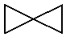
Angle valve
ISO10628-2102
ISO14617-2102
http://data.posccaesar.org/rdl/RDS5789384
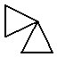
Three-way valve
ISO10628-2103
ISO14617-2103
http://data.posccaesar.org/rdl/RDS6331499
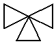
Globe valve
ISO10628-X8068
ISO14617-2121
http://data.posccaesar.org/rdl/RDS416204
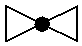
Angle globe valve
ISO10628-X8069
-
http://data.posccaesar.org/rdl/RDS882944
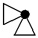
Three-way globe valve
ISO10628-X8070
-
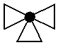
Ball valve
ISO10628-X8071
ISO14617-2122
http://data.posccaesar.org/rdl/RDS416654
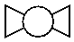
Angle ball valve
ISO10628-X8072
-
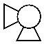
Three-way ball valve
ISO10628-X8073
-
http://data.posccaesar.org/rdl/RDS11141410
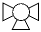
Gate valve
ISO10628-X8074
ISO14617-2124
http://data.posccaesar.org/rdl/RDS416519
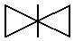
Butterfly valve
ISO10628-X8130
ISO14617-2126
http://data.posccaesar.org/rdl/RDS416609
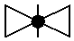
Needle valve
ISO10628-X8076
ISO14617-2125
http://data.posccaesar.org/rdl/RDS421064
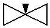
Check valve
ISO10628-X8077
ISO14617-2111
http://data.posccaesar.org/rdl/RDS292229
Lift check valve
ISO10628-X2113
-
http://data.posccaesar.org/rdl/RDS645119
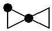
Swing check valve
ISO10628-X8165
-
http://data.posccaesar.org/rdl/RDS610424
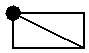
Damper blade
ISO10628-X8078
-
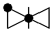
Control valve
ISO10628-X8087
-
http://data.posccaesar.org/rdl/RDS297539
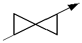
Safety valve
-
-
http://data.posccaesar.org/rdl/RDS309374
Safety valve spring loaded
ISO10628-X2124
-
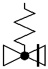
Angle safety valve spring loaded
ISO10628-X2125
-
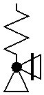
Breather valve
ISO10628-X8088
-